All-In 播客中文总结共 9 期 （2026 年 10 月 21 日 – 11 月 17 日），从新到旧。每期可听中文摘要朗读 （0.75–2 倍速）；下方图文幻灯片 左右滑动看重点，想看全文点卡内的「本章要点全文」。
说明： 音频是中文摘要朗读，不是原始播客录音 ；文中数字多为嘉宾说法或估计，未独立核实 ，每期文末有详细标注。配图为主题插画。
最新 11 月 17 日 · Databricks 与 AGI 之争11 月 14 日 · 黄仁勋下台风波
11 月 10 日 · Axon 与警务未来
11 月 7 日 · 中期选举复盘
11 月 4 日 · 选举夜直播
10 月 30 日 · Anthropic 招股
10 月 29 日 · WHOOP 与 FDA
10 月 23 日 · 泡沫警告
10 月 21 日 · 量子与开源之争
2026 年 11 月 17 日 最新一期
Databricks 首席执行官：通用人工智能已经来了，企业为何落后
Databricks CEO: AGI Is Already Here, Why Companies Are Behind, and the Superintelligence Debate
一句话总结 智能已经够用了，缺的是上下文——企业要先把会议、文档与决策连成一张活的图谱，AI 才能真正走进业务。
第一章 · 起点 0:00
三场豪赌 云计算、人工智能、开源——全押上
伯克利实验室走出的公司
2013 年「出于绝望」创立 Databricks
收入从 150 万到传闻约 70 亿美元 *
本章要点全文
戈德西和约二十位同事来自加州大学伯克利分校的 AMP 实验室，当时是世界上最大的 AI 研究实验室之一；2013 年他们「出于绝望」创立 Databricks——自己不办公司，就没人会听这些想法。
公司的第一个用例是帮 Netflix 推荐电影；它把一切都押在三件事上：云计算、人工智能和开源。当时三场豪赌都有争议，一家重要分析机构甚至说押注云计算是「战略失误」，但正因为反共识，公司才抢跑了好多年。
云计算的关键是把计算和存储分开：企业有了「无限存储」的假象，冷数据可以近乎免费地归档，算力按需获得，机器学习、后来还有 GPU，才随之而来。
企业采用 AI 难，还卡在治理与安全：三四十年历史的遗留软件、合规、监管层层叠加。戈德西说，企业最重要的数据是核心产品产生的数据，很多甚至从来没有被记录下来。
节目中提到：2015 年公司收入约 150 万美元；到 2026 年 8 月，传闻中的年收入 run rate 已达约 70 亿美元，同比增长约 80%——为节目中引用的传闻，未独立核实。
第二章 · AGI 已经来了吗 8:50
AGI 已来 按 2009–2010 年实验室的定义，去年就实现了
智能够用了，企业却只拿它当高级搜索
四个障碍：上下文、安全、成本、数据主权
企业融入 AI 要 10–15 年，不是几个月
本章要点全文
戈德西的判断：按 2009–2010 年 AMP 实验室的共识定义，通用人工智能（AGI）去年已经实现；他的原话是「我们已经拥有彻底改造地球所需的全部智能」——即使现在停止一切进展，现有智能也足以彻底改变世界。
实验室真正痴迷的是超级智能：按博斯特罗姆 2014 年《超级智能》的定义，能在一分钟内完成人类一千年的思考；实验室追逐数学难题、千禧年大奖问题，正是在追逐这种超级智能。
企业的现实却很初级：把 AI 当「高级谷歌搜索」，或用 AI 写代码、提速只有 20%–30%；没有哪家企业真跑着成千上万个智能体，最多半打、十几个，人还必须留在回路里。
四个障碍必须全部解决：①上下文——要集中公司全部信息、记录所有会议，但某家大银行的 CEO 明说「绝不记录会议」，因为法律责任；②网络安全——数据全开放给智能体，对二十万人的大公司，攻击面可能扩大一千倍；③成本——token 成本指数级上升，收入却没同步跟上；④数据主权与锁定——核心知识产权可能被平台吸进下一代模型，而平台正快速扩张、与企业正面竞争。
组织结构图不是组织真实的运作方式：真实工作横切架构流动，超过 150 人（邓巴数）协调就成大问题。能做到「公司世界模型」的，戈德西说只有 Databricks 自己和杰克·多西的 Block。
他的时间表与实验室相反：GDP 移动得非常缓慢，企业全面把 AI 融入核心业务需要 10–15 年，而不是实验室常说的 6–12 个月——为戈德西个人的判断，不是既定事实。
第三章 · 现场演示 22:04
一张图谱 Genie 的「本体论」：人、会议、决策全连起来
以前要一周的分析，现在当场完成
员工调查：领导力 88%，行动力约 60% *
两千名工程师的代码量呈 L 形分布 *
本章要点全文
Genie 与普通聊天机器人的关键区别是「本体论」：一张为公司不断构建的图谱，理解所有人、谁向谁汇报、在做什么、收到的邮件、开过的会与会上决定、Slack 上的话，以及全部文档与表格；它 7×24 小时运行，还能访问日历。
员工满意度演示：一万多名员工参与调查，高管领导力得分 88%，工作与生活融合 60%，行动力约 60%——三分之二的员工感到意见被倾听。首席财务官猜测是融合太差拖低了行动力，戈德西当场让 Genie 验证：二者相关，但不是因果。
按部门切分：产品管理行动力低，是因决策难、利益方太多；工程部门是不喜欢现有工具；销售运营是职业发展问题——与他对各部门的直觉完全吻合。这种分析以前要数据团队花一周，现在当场完成。
工程效率演示：两千名工程师每周提交的代码量呈 L 形分布，顶端的人跑的是「自动化工厂」；聪明地花 token——用开源模型、把简单问题路由给简单模型——可以大幅降低成本。
客户会议与「管理魔球」：Genie 能直接回答某次客户会「开得很糟」并列出谁说了什么；还能从 Slack、邮件与会议数据中找出真正做决策的人、发现文化漂移。戈德西定的北极星是减少「人类阻碍点」，把增速从 70%–80% 提到 100% 以上——以上演示与数据均为节目中展示的说法，未独立核实。
第四章 · 上市还是私有 38:25
先不上市 「我们会上市，但现在波动太大」
股价过山车，会变成员工的「降薪感」
上市好处：资本、讲故事、收购流动性
员工售股时大多只卖约 5%，或根本不卖
本章要点全文
戈德西的目标是在未来十年二十年内让 Databricks 尽可能成功，正在进入安全、营销等新市场；上市与否，要看哪条路更快、更好。
上市的好处有三条：获得资本；每季度财报都是一次向全世界讲故事的机会；股权在十亿美元级收购时能为被收购方提供流动性。公司每年还自行组织员工售股，员工大多看涨，预留额度用不完，多数人只卖约 5%，或者根本不出售。
保持私有的理由更直接：股价下跌，员工会觉得「你答应我能赚一百万美元，现在只值二十万，你骗了我，我要走」；三个月后涨回来又变成「太棒了」——这种过山车让 CEO 分心、让员工沮丧。
他的结论是：「我们会上市，一定会上市。但现在，正处在 AI 转型期，波动太大。」——为戈德西本人的判断，不是上市时间表。
关于竞争，真正的对手在「余光」里：Anthropic、Cloudflare、Replit 都在推出相邻功能。AI 让开发者效率大增后，只有约 10% 的人在 L 曲线顶端；其余 90% 爬上来，是裁掉低端开发者提利润，还是把时间全投入产品开发，是他正在做的抉择——以上均为节目中的说法，未独立核实。
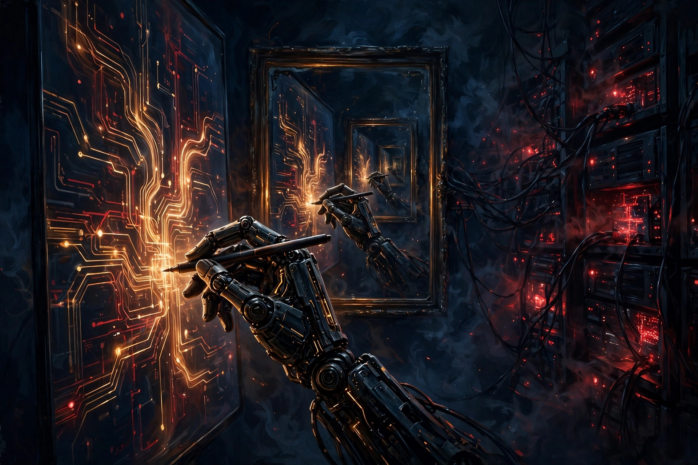
第五章 · RSI 与末日之争 44:02
四个条件 真正的递归自我改进，一个都不满足
真正的风险是网络安全，不是超级智能
谈 RSI，戈德西说：「我看不到任何风险」
攻防不对称：攻击只需成功一次
本章要点全文
背景：博斯特罗姆 2014 年定义了递归自我改进（RSI）——AI 改进自身、越来越快、最终起飞达奇点，人类失去控制；「回形针最大化器」「人类灭绝风险 10%」等说法由此而来。
戈德西不认这个推论：「仅仅因为 98% 的代码是由 AI 写的，我们并没有实现 RSI。如果它把最后 2% 也自动化了，又怎样？谁在乎？」
真正的 RSI 需要四个条件同时成立：训练时间超线性地变快；训练使用更少的资源；准确率至少线性且全面提升；三条放进循环持续成立，成本从一亿美元一路降到一百美元。现实恰恰相反：训练时间越来越长、资源越来越多，按缩放定律，要指数级增加硬件才能换来线性提升。
他认为真正的风险是网络安全：法国超市的冰箱密码是「admin，admin」，被远程调成除霜模式。攻防根本不对称——攻击者只需成功一次，防守方必须百分之百安全、时时刻刻。但他乐观：漏洞是有限的，新代码都由 AI 扫描，遗留代码可重写或「影子打补丁」，漏洞最终会比过去更少。
谈有效利他主义社群，他说出发点是好的、是真害怕，但对 RSI「我看不到任何风险」；对阿莫代伊「十年内癌症、阿尔茨海默病消失」的说法，他认为会给重病家庭带来虚假希望。医疗的真实进展包括 Regeneron 用 Databricks 找到慢性肝病的基因组反应、与默克合作的 TEDDI 药物发现模型。十年内治愈癌症？「也许十年，也许不是，也许三十年、五十年。」——以上均为嘉宾本人的观点，不是既定事实。
本期说明与未核实部分
本摘要依据 1% Better 发布的完整逐字稿全文、节目官方 Apple Podcasts / YouTube 页面的章节时间戳，以及 newsfilter.io 的逐章整理交叉核对；未逐字对照完整录音，第三方逐字稿可能存在转述或听录偏差，个别措辞以节目官方信息为准。
收入数字（2015 年约 150 万美元、2026 年 8 月 run rate 约 70 亿美元、同比增长约 80%）、员工规模（约一万两千人）、调查得分（高管领导力 88%、工作与生活融合 60%、行动力约 60%）、工程师人数（两千名）等，均为节目中给出的数据或嘉宾的说法，未独立核实。
戈德西关于通用人工智能已到来的判断、递归自我改进四条件、网络安全风险评估、上市时机与十年内治愈癌症的质疑，均为嘉宾本人的观点，不是既定事实；其他业界人士对通用人工智能的定义与时间表存在不同看法。
阿莫代伊关于十年内消除重大疾病的预测为节目中转述的说法，戈德西本人也未为其背书。
本期为 Jason Calacanis 对 Databricks 首席执行官阿里·戈德西的专访；本页音频为中文摘要的朗读，不是原始播客录音。
2026 年 11 月 14 日
黄仁勋下台：“间谍”风波、出口管制与市场冲击
Jensen Ousted as Nvidia CEO: "Spy" Scandal, Export Restrictions, Market Impact
一句话总结 创始人六天下台，真正的风险是：技术势头、资本流转与美国的算力优势，都系于一人。
第一章 · 开场 0:00
33 年 黄仁勋执掌英伟达的年头
六天之内，创始人下台
英伟达是 AI 算力的核心供应商
领导层动荡牵动市场与国家安全
本章要点全文
开场就是科技圈的一件大事：英伟达联合创始人、首席执行官黄仁勋下台了，他执掌这家公司已经三十三年。
四位主持人认为，这远不止是一桩普通的硅谷高管丑闻：英伟达已经成为支撑人工智能革命的算力基础设施的核心供应商。
它的领导层动荡，影响的不只是股东，还有科技公司、资本市场、国家安全，以及美国的竞争地位。
第二章 · 间谍指控与时间线 1:20
两个行动 萨克斯：泄密与芯片违规，是两件事
“间谍”指控与六天时间线
指控未经证实，无法院认定有罪 *
11 月 11 日董事会接受辞职，CFO 任临时 CEO
本章要点全文
杰森梳理的时间线（节目转述媒体报道）：据称黄仁勋与新加坡数据中心公司 Megaspeed International 的高管艾丽斯·黄（Alice Huang，两人没有亲属关系）有私人关系；美国情报界消息人士据称怀疑这名高管与中国情报部门有关联，但这些指控存在争议、未经证实。
2025 年 10 月，《纽约时报》首次提到这段关系；2026 年 11 月 6 日，又报道了那份据称泄露的机密情报备忘录。11 月 8 日，黄仁勋在给员工的信中承认自己对妻子不忠、为违背家人和员工的信任道歉，董事会随即展开独立调查；据《华尔街日报》等报道，董事会在准备罢免前还收到关于他与另一名英伟达员工有婚外情的报道。
据英伟达向美国证交会提交的文件：董事会于 11 月 11 日接受黄仁勋的辞职，11 月 12 日对外宣布——黄仁勋辞去总裁、首席执行官和董事职务，立即生效；首席财务官科莱特·克雷斯（Colette Kress）出任临时首席执行官，长期董事哈维·琼斯（Harvey C. Jones）出任公司有史以来第一位董事会主席。消息公布当天股价一度大跌，按节目中的说法，一周内累计下跌约 15%。
萨克斯区分两件事——他的原话是“整件事里有两个行动”：一是芯片是否通过东南亚中间商违规供应给中国客户，二是据称机密的情报材料为何被泄露给记者。两件都值得调查，但他强烈反对把任何一桩争议直接等同于黄仁勋有罪；他还追问，为何黄仁勋没有像国会议员斯沃尔韦尔那样提前收到情报部门的防御性简报，为何信息偏偏在此时公开——怀疑不是证据。
治理角度：弗里德伯格与查马斯指出，上市公司行为准则约束利益冲突与关系披露；未披露涉及员工、客户、供应商的关系，问题可能不只在关系本身，更在于此前是否向董事会、审计师或律师作过不实陈述。即使没有刑事犯罪，披露失误也可能牵动审计师、董事及高管责任保险与股东诉讼，带来巨大公司责任。杰森则质疑董事会是否行动过快、是否部分出于自保——以上均为节目主持人的分析与判断，不是调查结论。
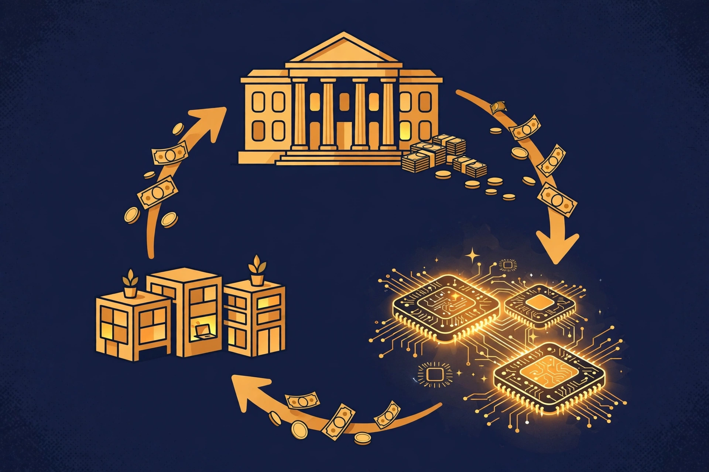
第三章 · 市场冲击 31:22
英伟达银行 不只卖芯片，还给整个 AI 生态融资
资本流转慢下来，创新就慢下来
查马斯估：增长或放缓 0.5–1.5 个百分点 *
萨克斯：关键是势头与活力
本章要点全文
查马斯解释“英伟达银行”（The Bank of Nvidia）：在黄仁勋领导下，英伟达不只卖芯片，还投资 AI 初创企业、支持基础设施运营商、签订战略商业协议，帮助为购买其硬件的生态系统提供融资，在芯片需求、资本投入、模型开发与基础设施扩张之间形成相互强化的循环。
杰森担心：一位常规的继任 CEO 可能不愿再把数十亿美元投入雄心勃勃的基础设施项目或新兴 AI 公司，更多依赖投资委员会、财务预测与常规审批——保障本身并非坏事，但会降低部署资本的速度。弗里德伯格概括：资本流转的速度，决定创新的速度。
查马斯估计，在不利情形下这种扰动可能使美国经济增长放缓约 0.5–1.5 个百分点——这是他的个人估计，不是正式经济模型的预测。他把英伟达比作叠叠乐里关键的一块积木：抽掉它，整个结构可能变得不稳定。
萨克斯认为更重要的后果是产品开发周期放缓：英伟达的优势不只是今天的 GPU 更强，而是从 Ampere、Hopper、Blackwell 到 Vera Rubin 一代代持续推出更强的产品——“关键就是势头和活力”。节奏一慢，就会给竞争对手留出机会。
他以华为为例：单颗 AI 芯片通常不如英伟达最先进的加速器，但华为用数百颗芯片组成 CloudMatrix 等集成系统、并靠庞大电力弥补效率差距。查马斯反驳：对手仍须跨过先进封装、高带宽内存、制造与软件生态等巨大门槛，英伟达几十年的机构经验不会因创始人离开而消失——以上关于华为与中国算力的说法均为节目论述，未独立核实。
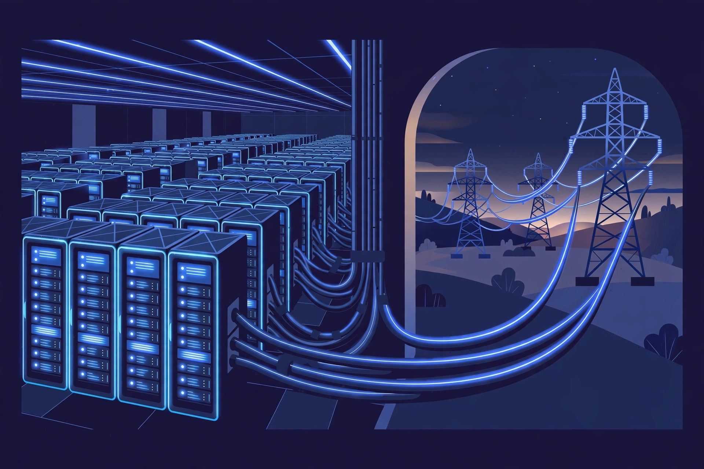
第四章 · 出口管制 44:19
不想要这些芯片 萨克斯概括中国的产业政策目标
限制出口，也可能加速替代
卖低性能芯片，本为削弱华为收入
美中动机不同，短期结果却相似
本章要点全文
萨克斯梳理：美国对先进 AI 芯片的限制始于 2022 年的拜登政府——区分领先芯片与性能较低的芯片，前者严格管制，后者在一定条件下仍可售华；特朗普政府延续了对先进产品的限制，并对某些低性能芯片增加许可与数量要求。以上为他在节目中的论述。
最初的经济逻辑比“不让中国拿到美国技术”更微妙：允许卖性能较低的芯片，可以保持美国的商业影响力，并让收入流向美国半导体公司而不是华为——半导体研发需要巨额投入与规模，限制华为的国内市场就能拖慢它。萨克斯认为，政策制定者可能低估了这种效应。
他还说，中国政府本身也在劝阻或限制使用某些英伟达产品，希望国内开发者支持中国芯片制造商，并提到有报道称较新的 DeepSeek 模型训练中使用了华为硬件。悖论由此出现：美国国家安全政策想减少中国对英伟达的依赖，中国产业政策也想迫使客户转向华为——动机不同，短期的商业结果却可能相似。他用一句话概括中国政府的目标：“中国甚至不想要这些芯片”，同时区分政府目标与中国开发者的个人偏好。
弗里德伯格把争议引向技术权力的分布：在先进芯片中加入追踪、定位控制或远程停用功能，有助于执行出口限制，但更重要的问题是治理——谁来控制这些系统？这类机制若范围过大或监督不足，一旦被攻破或滥用，也可能成为隐私、网络安全与公民自由方面的危险漏洞。这些是主持人的预测与担忧，不是已经建立全面政府控制的证据。
第五章 · 谁来接任 58:26
战时 CEO 查马斯给继任者定的标准
谁来接任英伟达？
候选：巴克、哈斯、阿罗拉 *
守成型 CEO 在半导体竞争中不够
本章要点全文
查马斯提到的候选人：英伟达资深技术领袖伊恩·巴克（Ian Buck，深谙英伟达的计算技术与工程文化）、Arm 首席执行官雷内·哈斯（Rene Haas，半导体行业领导经验）、Palo Alto Networks 首席执行官尼克什·阿罗拉（Nikesh Arora，擅长资本配置、企业技术与网络安全）——是他在节目中提到的名字，不是英伟达董事会的官方决定。
他的原话：“你需要一位战时 CEO。”看守型 CEO 优先盈利、运营稳定、降低风险与资本回报，这些目标很有价值，但在技术快速提升、竞争对手不断推出替代方案时可能还不够；英伟达需要能大胆投资、同时继续推动技术边界的人。
主持人把英伟达的处境与乔布斯之后的苹果作比较：蒂姆·库克成功扩大了苹果的规模、盈利与股东价值，但杰森质疑苹果是否保持了乔布斯时代那种突破性产品创新的速度。萨克斯认为，半导体竞争可能比智能手机业务更无情——错过一两个重要产品周期，竞争对手就可能取得实质性进展。
弗里德伯格与杰森也提到，如果调查最终确认黄仁勋没有严重不当行为，他有可能回归领导岗位；但他们承认，公司治理流程、保险要求、诉讼与监管审查都可能让这种结果变得复杂——只是节目中的猜测。
第六章 · Anthropic 上市路演 1:06:25
$1.4 万亿 节目给出的拟议估值 · $70–78/股 *
一家可能“赢者通吃”的公司
年化收入据称约 $810 亿，已超 OpenAI *
查马斯估：定价八成看大环境
本章要点全文
据节目中给出的数据：Anthropic 准备发行约 8.25 亿股，拟议价格区间为每股 70–78 美元，对应估值约 1.4 万亿美元，低于此前接近 2 万亿甚至 3 万亿美元的推测；公开募股加上涉及主要科技伙伴的私募配售，合计融资规模接近 900 亿美元。其年化收入据称到 10 月底已达约 810 亿美元，节目中还说它的季度收入已经超过 OpenAI——以上数字均为节目数据，未独立核实。
但查马斯估计，只有约 20% 的定价结果直接取决于 Anthropic 自身的表现，其余约 80% 将受更广泛的经济与金融环境影响——这是他的概念性判断，不是统计分解。他还估计，交易完成并结合相关融资安排后，Anthropic 可能积累约 2300 亿–3000 亿美元的财务资源。
杰森认为，Anthropic 可能在追求比卖模型使用权更重要的战略：把会议、协作白板、电子表格、个人理财、法律工作流、编程、设计与自主助手等企业软件功能打包进 Claude，最终可能像微软 Office 当年那样挑战众多老牌软件企业——从“卖应用使用权”转向“卖已完成的业务成果”。萨克斯同意其雄心巨大，此前曾形容它可能建立历史上最有价值的垄断之一。
张力在于：Anthropic 一方面公开强调 AI 安全与自主系统的风险，另一方面又把递归自我改进——AI 帮助开发出越来越强大的 AI——作为变革性的投资机会来营销。萨克斯质疑，为什么一些安全组织对 Anthropic 相对支持、却对竞争对手与开源 AI 表达更多担忧，认为机构关系、资金与监管利益可能影响立场——这是他对机构动机的解读，不是已确认的事实。
节目结尾：Anthropic CEO 达里奥·阿莫代伊预测，癌症、阿尔茨海默病、心脏病与精神疾病等可能在大约十年内基本成为过去。弗里德伯格没有否定背后的科学可能性——AI 已在加速分子发现与计算生物学——但明确拒绝为该时间表背书：从有前景的分子机制到安全有效的疗法，还要经过复现、验证、安全性评估与临床试验，高度不确定。
本期说明与未核实部分
完整逐字稿未取得：摘要依据节目官方 Apple Podcasts / YouTube 页面的章节时间戳、英伟达官方公告与证交会文件，以及一篇逐章整理的第三方节目总结交叉核对；未逐字对照完整录音，第三方总结可能存在转述偏差，个别措辞以节目官方信息为准。
关于黄仁勋与艾丽斯·黄的关系、所谓中国情报关联、机密备忘录泄露，以及与另一名员工的关系，均为媒体报道与节目转述的指控，未经证实，也没有法院认定黄仁勋有罪；“唯一可以确认的犯罪是泄密本身”是萨克斯在节目中的看法，不是法律结论。
股价跌幅、市值蒸发规模、英伟达董事会调查结论、芯片违规出口的事实，均未独立核实；节目中给出的股价与市值数字为节目与相关报道的说法。
Anthropic 的发行股数、价格区间、估值、融资规模、年化收入、季度收入超过 OpenAI 的说法，以及查马斯的 20% 与 80%、0.5–1.5 个百分点、2300 亿–3000 亿美元等估计，均为节目中给出的数据或嘉宾的个人估计，未独立核实，不应把嘉宾估计当作官方统计或既定事实。
出口管制历史、华为产品能力、DeepSeek 训练使用华为硬件的说法，均为节目主持人的论述，未独立核实。
继任候选人（伊恩·巴克、雷内·哈斯、尼克什·阿罗拉）为查马斯在节目中提到的名字，不是英伟达董事会的官方决定；黄仁勋是否可能回归，节目中只是主持人的猜测。阿莫代伊关于十年内消除重大疾病的预测为嘉宾转述的说法，弗里德伯格明确表示不为该时间表背书。
2026 年 11 月 10 日
自由与安全：Axon 首席执行官里克·史密斯谈警务的未来
Freedom vs. Safety: Axon CEO Rick Smith on the Future of Policing
一句话总结 从车库造电击枪到无人机警务：关键不在技术本身，而在谁掌控它、有什么护栏管住它。
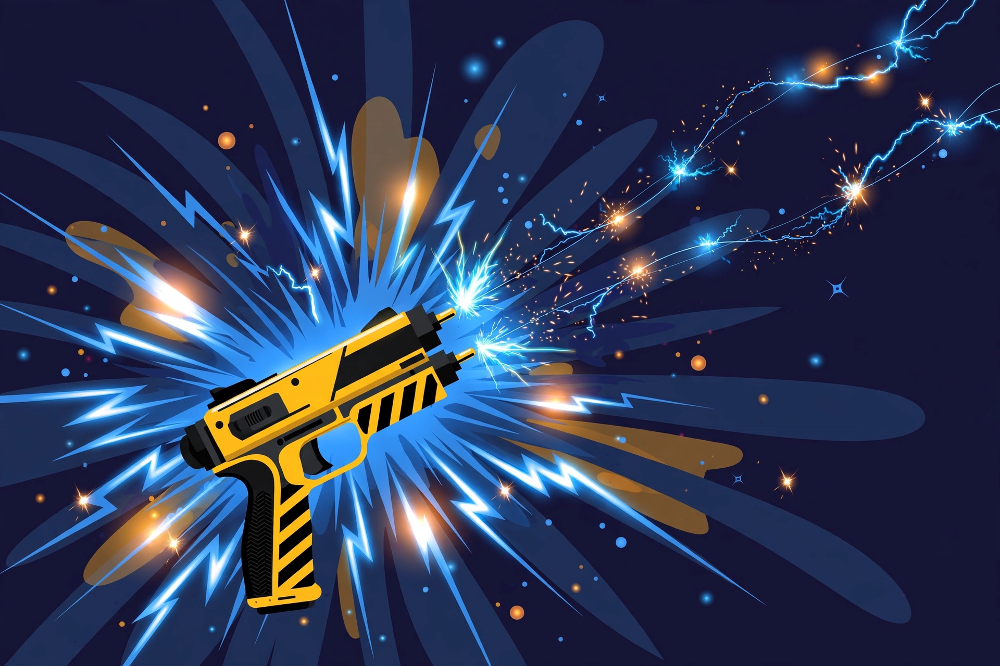
第一章 · 开场 0:00
五秒钟 被电击时身体完全失控的时长
被电击是什么感觉
电流一停，立刻恢复正常
弗里德伯格专访 Axon CEO 史密斯
本章要点全文
史密斯亲述被电击枪击中的体验：五秒钟里身体完全失控，像能量波一浪浪涌过，五秒感觉非常漫长；电流一停，立刻恢复正常。
弗里德伯格开玩笑说执法记录仪视频是门好内容生意；史密斯承认 Axon 试过 Axon Studios，但公司“太挺警察”，做不出足够出格的内容，这门生意留给别人。
以上是节目开场的闲聊。
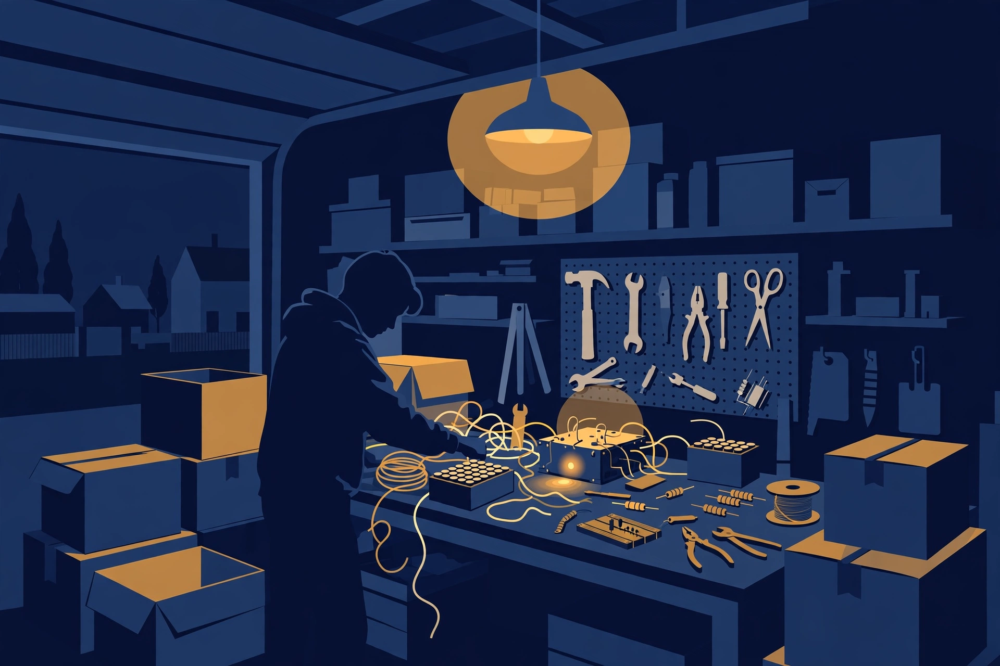
第二章 · 车库到泰瑟 2:39
最后 100 万 1998 年父亲押上的救命钱（美元）
消费市场七年失败，转向警用起飞
23 岁与 73 岁发明人在车库造泰瑟
1999 年底转向警用，一年现金流转正
本章要点全文
1993 年在欧洲读书时，史密斯发现自己认识五六个死于枪击的人；他想：子弹是几百年前的老技术，为什么不能像《星际迷航》的相位枪那样不杀人也能制服威胁。
他通过专利文件找到泰瑟枪的发明人——一位 73 岁的 NASA 科学家；23 岁的他与发明人在车库里造新一代泰瑟枪，第一个原型 30 天做出来，零件来自五金店，启动资金来自亲友，没有一家风投愿意碰。
新设计改用压缩空气、不再属于火器，普通人也能买；但消费市场做了七年一直失败——消费者反问：如果真管用，为什么警察不用？1999 年底公司转向警用市场，生意从此起飞。
1998 年公司差点关门，还欠硅谷银行约 200 万美元；父亲拿出最后 50 万美元、早期投资人卡尔弗跟投 50 万，靠这最后一百万美元推出警用电击枪，一年内现金流收支平衡，两年后上市。
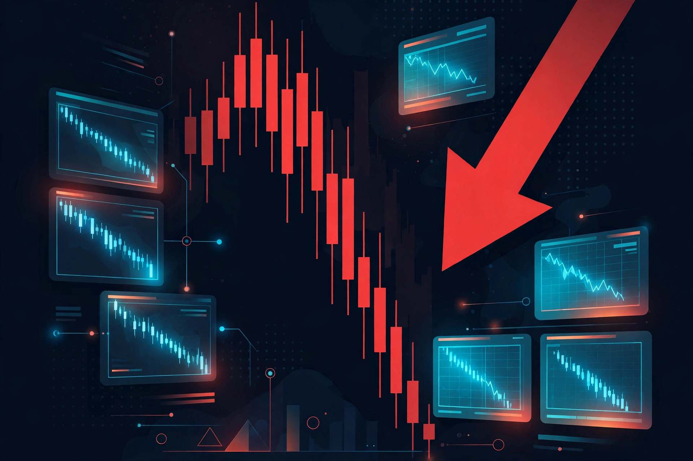
第三章 · 上市做空证交会调查 9:05
$33 → $7 2005 年股价从峰值跌落
做空、证交会调查与数百起诉讼
调查最终结论：没有发现问题
拒绝和解，自己接手辩护两次打赢
本章要点全文
2001 年公司以约 1200 万美元估值上市，股东名单里没有一家风投或机构投资者；上市最大的解脱是还清股东借款，父亲不用破产。
卖给警察靠的是现场演示：团队雇前海军陆战队员开房车跑遍全美，带着 100 美元现钞走进警局——谁能扛住电击把钱拿走，钱就归谁；警察被电倒后纷纷下单。
上市后连续三年每年翻三倍，2004 年成为全球表现最好的股票；但 2004 年底遭证交会调查与做空攻击，私人助理竟是做空者的内线，把内部文件泄露给《纽约时报》。
2005 年股价从 33 美元跌到 7 美元，市值从约 20 亿美元峰值跌回约 1 亿美元，诉讼从零增至数百起；史密斯抱着几箱文件直接走进证交会旧金山办公室要求配合调查，调查最终以“没有发现问题”结束。
诉讼战中他拒绝保险公司约 200 万美元的和解方案，反过来由保险公司出钱、Axon 自己接手辩护，两次都打赢，还赚了钱；如今公司几十年来第一次没有任何未决诉讼。
大学好友帕托维帮他从零搭建软件业务，并推动公司从 Taser 改名为 Axon——业务早已不止电击武器。
第四章 · 执法记录仪 20:47
100 万+ 每天佩戴上传的警察人数 *
从没人愿意戴，到弗格森后的转折
戴满 90 天，就再也不肯摘下
每天管理的视频量超过 YouTube *
本章要点全文
执法记录仪源于一起诉讼：一名男子在警方羁押中死亡，庭审中警察只能用克制的语言描述当晚的狂暴场面，陪审团无法理解——史密斯意识到，必须把警察看到的东西录下来，而不是靠语言解释。
警察起初不愿戴，七年里不断有人说这是“老大哥在监视”；史密斯下双重赌注：记录仪加云端存储，因为 1.8 万个警局不可能各自搭建安全的视频服务器。
转折来自一次凤凰城巡逻：被捕女子在警车里威胁诬告警察强奸，警察提醒全程录像，对方立刻安静。工会领袖的名言：没有警察愿意戴记录仪，直到戴了 90 天，之后出警再也不肯摘下。
真正的转折是弗格森事件：迈克尔·布朗家属与警察工会都要求配发记录仪；此后几乎所有大型警局都配发，绝大多数在 Axon 系统上。
史密斯称：超过 100 万名警察每天上传约两小时视频，Axon 每天管理的视频量超过 YouTube，公司市值涨到约 350 亿–400 亿美元——均为其节目中的说法，未独立核实。
他的观点：当年推动记录仪的公民自由团体如今批评它“坏了”，因为没揪出那么多坏警察；另一种可能是，绝大多数警察工作做得不错，记录仪证明了他们被冤枉——这是他的个人观点。
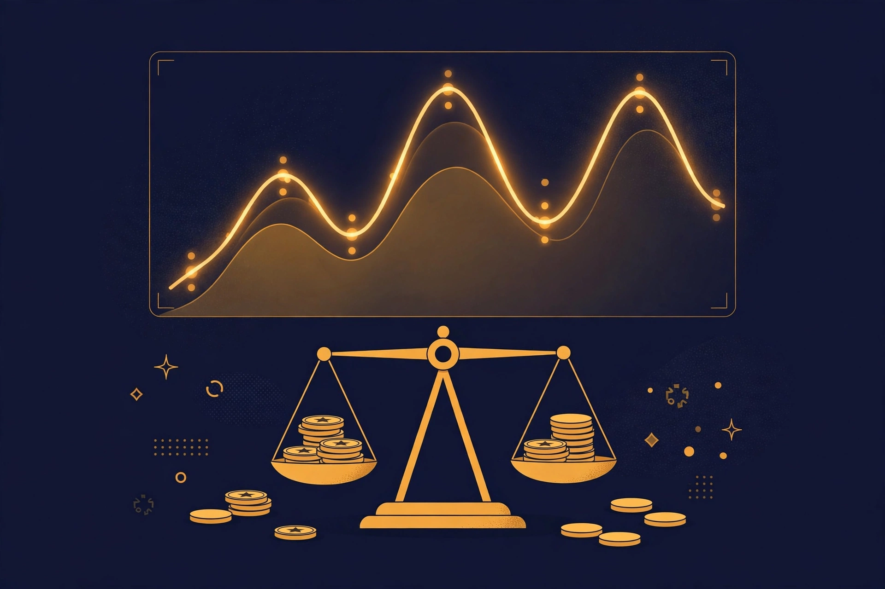
第五章 · 自由与安全 35:25
护栏 监控技术之争的关键词
担忧不无道理，关键在数据治理
支持立法：查询前要有真实案件编号 *
滥用者个人担刑责，须双人协作 *
本章要点全文
弗里德伯格问起公众对监控的反弹：Flock 在城市装摄像头，一些市议会开始否决；史密斯承认担忧不无道理，没人想生活在人人被追踪的社会。
但他说社会回不去 1950 年代了，摄像头无处不在、比人还多，关键问题是数据治理：什么情况下可以把画面交给政府、政府又该如何使用。
公众真正反感的是滥用，比如警察用系统查前女友、追踪每个人的行踪；追踪被盗车辆、查找暴力犯罪现场附近的车牌，是普遍认可的合理用途。
他支持参议员霍利的法案：为这类技术制定指引与监管，对滥用的警察个人设定刑事与民事处罚，查询前必须有真实案件编号，还要两个系统协作才能执行——以上法案内容为节目中的说法。
谈到 Ring 门铃摄像头的反感与 Flock 被违规偷看的报道，他认为社会会找到中间地带：Axon 与 Ring 合作的重点是让屋主自己掌控视频分享，警方不能随意调取；有合理护栏，90% 讲道理的人会接受。
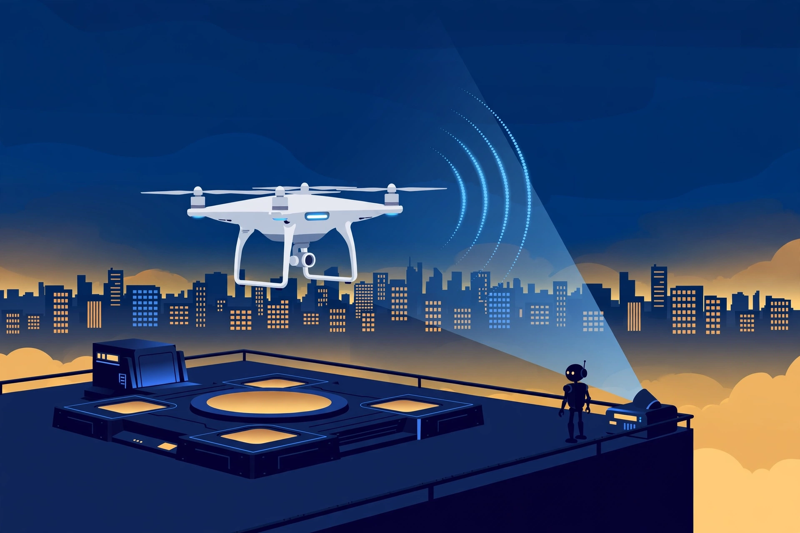
第六章 · 无人机机器人未来 45:24
人类拍板 使用武力的决定必须由人做出
无人机与机器人警务的未来
Skydio 无人机接警后几秒到场
用电击无人机须实时获管理员批准
本章要点全文
Axon 的使命是保护生命：用泰瑟减少警察开枪，用记录仪减少过度武力并保护警察免受虚假指控，再把设备连接起来。
Axon 已成为美国领先无人机公司 Skydio 的最大投资者，买下近一半股份并拿到独家渠道；无人机停在消防站自动机库，接到报警几秒就能到场，有时比接线员录完信息还快，且只在接到求助时出动、不做日常巡逻——投资比例为节目说法。
2022 年 Axon 宣布研发装电击枪的无人机以阻止校园枪击，多名 AI 伦理委员会成员辞职抗议；史密斯说项目仍在继续：派非致命机器人进楼对峙持枪者，局面完全不同。
底线：任何对他人使用武力的决定都由人类做出；机器人系统不仅需要人类监督，还要多重密钥流程，比如使用无人机上的非致命武器前必须实时获得管理员批准——他认为这会是警务史上最难被滥用的技术。
他的预测：未来几年美国将部署数百万架无人机；未来 12–18 个月约五家公司会推出 1 万–3 万美元的商用类人机器人——均为其个人预测。
结尾他说自己是巨大的乐观主义者：技术将治愈许多疾病，但过渡期会有艰难时刻，警察是稳住社会的胶水；弗里德伯格总结：公共安全是其他一切社会契约的基础。
本期说明与未核实部分
摘要依据节目官方 Spotify 页面的章节时间戳与一家节目整理站的完整逐字稿交叉核对，未逐字对照完整录音；逐字稿为第三方整理文本，可能存在转录错误，个别措辞以节目官方信息为准。
市值、股价、诉讼数量、警察人数、视频量、产品发布时间与价格等数字，均为史密斯在节目中的说法或个人估计，未独立核实，不应把嘉宾估计当作官方统计或既定事实。
霍利参议员法案的内容、Skydio 的投资比例与独家渠道、电击无人机项目的进展，均为节目中的说法，未独立核实。
蒙特利尔警察罢工、弗格森事件经过、平克著作引用等历史事例，均为史密斯在节目中的叙述，未逐一核对原始资料。
史密斯关于自由与安全、削减警费后果、机器人警务未来的看法，均为嘉宾的个人观点与预测，不是已通过的法律或已发生的政策。
Apple Podcasts 单集 id 未核实，故未写入。
2026 年 11 月 7 日
中期选举惨败、四万亿美元 AI 抛售、数据中心冻结、特朗普接下来怎么办
Midterm Blood Bath, $4T AI Sell Off, Data Center Freeze, What's Next for Trump
一句话总结 惨败是生活成本的公投：工资跟不上物价，选民就换人；AI 算力也绑上了选票。
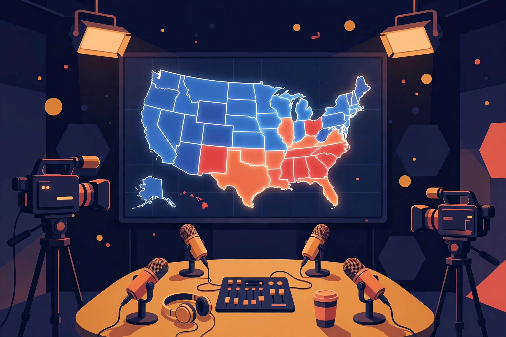
第一章 · 开场 0:00
50万+ 同时在线 · 总观看超 100 万
50 万人同时在线的选举夜
克鲁兹、夏皮罗等嘉宾同台
复盘选举 → 特朗普出路 → AI 与数据中心
本章要点全文
三天前的选举夜直播同时在线 50 万人、总观看量已超 100 万，主持人称这是当晚规模最大的选举夜直播。
当晚嘉宾包括参议员克鲁兹、伊曼纽尔、Polymarket 创始人科普兰、夏皮罗、格斯特纳等。
本期三步走：系统复盘中期选举；谈特朗普剩下两年的出路；再讨论 AI 交易是否破裂、数据中心会不会被叫停。
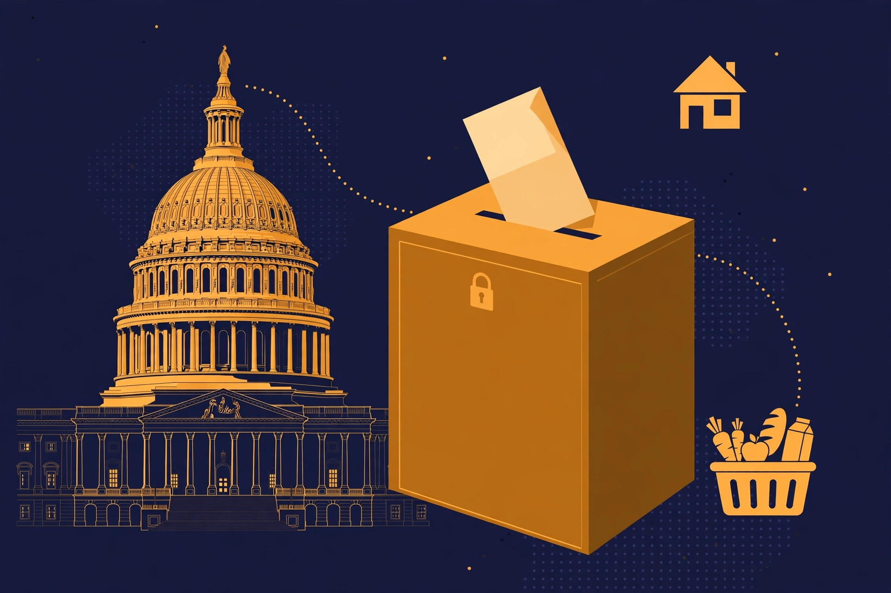
第二章 · 中期选举复盘 3:37
29+ 民主党赢下的州长场次 *
不是意识形态输了，是生活成本输了
民主党横扫两院，深红州翻蓝
败因是生活成本：油价、通胀、房贷全涨
本章要点全文
节目中的说法：民主党横扫国会两院、赢下至少 29 场州长选举，得州、堪萨斯、艾奥瓦、南卡等深红州翻蓝；席位数尚未获最终认证核实。
萨克斯归因于伊朗战争：汽油涨过 4 美元、通胀从 2.4% 升至 3.7%、房贷利率约 7.5%（均为节目说法）。
查马斯：“美国的经济现实已经坏掉了”——同一批中间选民接连倒向两党，他们要的不是左或右，而是一次经济重置。
弗里德伯格指向政府开支失控；杰森梳理特朗普净支持率从 +5% 跌到 −28%。
第三章 · 特朗普的出路 32:26
停战 萨克斯给特朗普的答案
支持率跟着油价走
结束战争是第一、第二、第三件事
杰森五点方案：特赦、税改、医保、最低工资 $15、禁炒股 *
本章要点全文
萨克斯：结束战争是第一、第二、第三件要做的事；特朗普支持率走势与汽油价格几乎完全吻合，选日当天油价预期一动，布伦特原油一天跌约 10%（节目说法）。
历史先例：克林顿、奥巴马中期惨败后仍连任；小布什 2006 年惨败后选择增兵，结果 2008 年再输。
杰森的五点交易方案：特赦、资本利得税改革、医保改革、最低工资提到 15 美元、禁止官员炒股——均为个人建议，不是已实施政策。
弗里德伯格更悲观：AI 像“魔戒”，政府最终会试图把算力当作公用事业来监管。
第四章 · 市场反应 53:13
$4T 选后市值蒸发 · 史上最惨一天
市值蒸发，数据中心冻结？
英伟达、特斯拉全线大跌
Anthropic 上市概率 95% → 71%
本章要点全文
节目称选后英伟达、特斯拉、AMD 等全线大跌，市值蒸发近 4 万亿美元，是按美元计史上最惨一天（节目说法）。
Anthropic 年内上市概率从 95% 跌到 71%，估值预期缩水到约一万亿出头（节目说法）。
得州新当选州长表态新规通过前不再发新许可；萨克斯提醒，一批许可未拿齐的半成品项目可能被搁置——这是预测，不是已发生的政策。
主持人警告：美国不让建，数据中心会建到加拿大、墨西哥、东南亚，算力出口国可能变进口国。
第五章 · 科学角 1:24:21
P = NP？ OpenAI 论文称 3SAT 可次指数求解
OpenAI 破解指数时间假设？
本章要点全文
节目介绍：OpenAI 一篇 175 页论文声称证明 3SAT 可在次指数时间内解决，从而推翻指数时间假设，意味着 P 仍有可能等于 NP。
弗里德伯格强调：论文尚未经第三方完全验证，目前的证明只是“暂时站得住脚”。
不要把节目说法当作数学定论——P 是否等于 NP 仍是未解之谜。
本期说明与未核实部分
摘要依据节目官方 Spotify 章节与一家整理站的完整逐字稿交叉核对；逐字稿为第三方整理文本，可能存在转录错误。
参议院 54–56 席、众议院至少 250 席、至少 29 场州长选举等，均为节目中的说法，最终认证结果未核实。
通胀、油价、房贷利率、四万亿美元市值蒸发、Anthropic 上市概率与估值等数字，均为嘉宾说法或个人估计，未独立核实。
特赦、税改、最低工资、官员禁股等是嘉宾的建议与预测，不是已通过的法律或已发生的政策。
Apple Podcasts 单集 id 未核实，故未写入。
2026 年 11 月 4 日 直播特辑
2026 选举夜直播：与 Besties 一起看开票
2026 Election Night Livestream with the Besties!
一句话总结 分歧不在谁赢，而在赢了之后：花在弹劾冻结，还是伦理改革与算力建设。
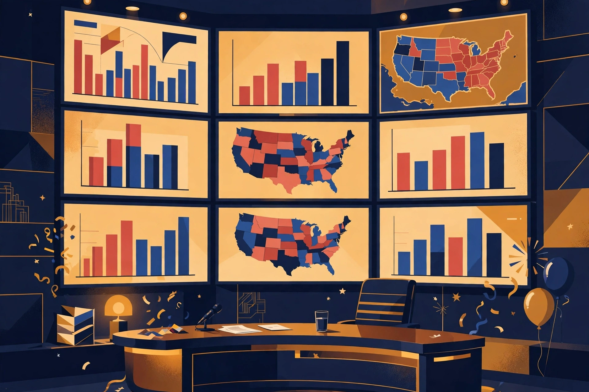
第一章 · 开场 直播
蓝色浪潮 嘉宾形容选举夜初步走势
初步开票指向民主党大胜
初步开票：民主党两院 + 州长大胜
当晚判断，非最终认证 *
本章要点全文
选举夜直播中，主持人与嘉宾边看陆续公布的初步开票结果边分析，嘉宾用“蓝色浪潮”形容当晚走势。
这是直播当晚依据初步开票作出的判断，不是最终认证结果。
本期是 YouTube 直播特辑：截至核查时未收进 allin.com 节目列表与 Apple Podcasts，因此没有单集 id。
第二章 · Ted Cruz 嘉宾段落
3/4 对 1/2 得州提前投票率：民主党 vs 共和党
得州投票差距 → 僵局预测
共和党结构性劣势，源于生活成本
预测：拿下一院即全面僵局 *
本章要点全文
Cruz 指出：得州高频民主党选民约四分之三已提前投票，高频共和党选民只有约一半，共和党在选举日面临结构性劣势。
他把选民不满归因于生活成本：柴油每加仑 6–7 美元、化肥涨价、关税让农民牧场主承压（嘉宾说法）。
他预测民主党拿下任一院将出现全面立法僵局，能源许可与数据中心审批受阻会拖慢美国算力建设——是预测，不是已发生的政策。
第三章 · Ben Shapiro 嘉宾段落
48% → 20%+ 拉美裔对特朗普支持率跌幅
2024 年特朗普联盟为何瓦解
本章要点全文
Shapiro 用算术解释失利：联盟不需要彻底瓦解，边缘流失就会失去执政权；西南部拉美裔支持率从约 48% 跌到 20% 多，得州南部多个选区随之丢失。
他的提醒：新当选者常把狭窄胜利误读为全面改革授权，急推颠覆性变革，而选民其实只想要稳定。
展望 2028，他认为马里兰州州长 Wes Moore 被低估了——这是他的个人判断。
第四章 · Brad Gerstner 嘉宾段落
10–15 GW 或因地方阻力无法上线的算力
AI 股跳水，瓶颈是电力
本章要点全文
Gerstner 描述：初步结果指向民主党大胜后，科技股盘后跌约 5%–10%，AI 股票一小时内回吐约 10%（其引述说法）。
真正的瓶颈不是钱，而是电力接入：他估计到 2027 年地方阻力可能让 10–15 吉瓦规划算力无法上线。
他估计 AI 基建约占近期美国 GDP 增长的 75%，建设减半将拖累明年增长约 50 个基点——均为个人估计，不是官方统计。
但他也划线：电力瓶颈限制的是机群规模，消灭不了模型与产品的真实客户需求。
第五章 · Rahm Emanuel 嘉宾段落
5 点 Emanuel 伦理改革提案 *
用伦理改革代替弹劾
禁官员炒股、禁参与预测市场
保密信托 · 任期/75 岁上限 · 禁外国资金
本章要点全文
Emanuel 警告民主党不要在“20 码线”就提前庆祝：2027 年做了什么，才决定这场胜利算不算真正赢了。
五点伦理改革方案：禁止官员买卖个股；禁止行政官员参与预测市场；净资产超 100 万美元者设保密信托；任期限制或 75 岁年龄上限；禁止任内接受外国资金。
以上是他提出的方案，不是已通过的法律。
他还主张从医疗成本入手：先砍医院约 25% 的保险理赔行政开支（节目中说法，未独立核实）。
第六章 · Shane Coplan 嘉宾段落
25¢ = 25% 合约价 = 市场认为的概率
预测市场为什么越操纵越准
本章要点全文
Polymarket 创始人 Coplan 解释机制：合约押中结算 1 美元、押错归零，25 美分的合约即市场认为概率约 25%。
大资金砸钱抬价，只会立刻引来专业交易员反向接单——操纵越激进，市场变得越准的动力越强。
冷门结果偶尔发生不代表定价错了：10 美分的合约对应的就是十分之一概率。
这是创始人对自家产品机制的解释，应理解为其观点，不是独立验证的结论。
本期说明与未核实部分
完整逐字稿未取得：摘要依据 YouTube 直播页、节目整理页的五篇分嘉宾二手梳理交叉核对；直播无官方章节时间戳，故按嘉宾段落分章，不编造时间戳。
Steve Bannon、Tim Dillon、Taylor Lorenz 列在嘉宾名单中，但二手梳理未覆盖他们的发言，本页不转述。
选举表述均为直播当晚依据初步开票的判断；拉美裔选票、提前投票比例、盘后跌幅、10–15 吉瓦、GDP 占比等数字均为嘉宾说法或个人估计，未独立核实。
Emanuel 的五点方案、Cruz 的僵局警告、Gerstner 的算力推演，均为嘉宾的预测与主张，不是已通过的法律或已发生的政策。
2026 年 10 月 30 日
Anthropic 招股文件震撼，最伟大的生意？谷歌市值蒸发五千亿美元，中期选举预测
Anthropic S-1 Shocker, Greatest Business Ever? Google's $500B Wipeout, Midterm Predictions
一句话总结 分歧不在需求真假，而在融资、供电与治理的成本，会不会大到改变经济与政治。
第一章 · 开场 0:00
$1.5–2 万亿 Anthropic 估值区间 · 拟募资 $1000 亿
一次可能改写纪录的 IPO
本章要点全文
开场焦点是 Anthropic 据称已提交的 S-1 招股文件：这家只有约六年历史的公司，正准备一次规模空前的上市。
节目讨论中的估值区间在 1.5 万亿至 2 万亿美元之间，拟募资额约 1000 亿美元。
这些是节目中讨论的传闻与主持人估算，不是已核实的招股文件最终条款，股数与发行价当时仍未确定。
第二章 · S-1 拆解 3:22
$163 亿 2026 上半年收入 · 同比约 14 倍
会是有史以来最好的生意吗？
$800 亿亏损多是会计处理，现金消耗约 $90–100 亿
成本 $10 → $1，售价减半利润反升
本章要点全文
节目引述：2026 年上半年收入约 163 亿美元、为上年同期约 14 倍；但主持人未始终严格区分确认收入、经常性收入与年化运行率。
萨克斯的解读：此前流传的约 800 亿美元亏损很大部分是可转换工具的会计处理，净现金消耗只有约 90–100 亿美元（其说法）。
“算力乘数”：同项任务成本从 10 美元降到 1 美元，售价可从 20 降到 10，客户省一半，利润率反而可能改善。
查马斯给出 1.3 万亿–1.7 万亿的个人估值，并提醒最紧迫的难题可能不是找客户，而是拿到足够的电力与算力。
第三章 · AI 最大的问题 32:47
无法定价的风险 查马斯谈集体举债建算力
融资挤压 vs 建得不够
本章要点全文
查马斯担心：一小批科技公司集体举债建算力，融资需求可能挤压国债市场，是“无法定价的风险”——他没有断言危机必然发生。
杰森反驳：如果数亿人每天使用多个 AI 智能体，算力消耗远超预测，真正的风险反而是建得不够。
萨克斯指出 Anthropic 的张力：公开警告强大 AI 的风险，又有商业动力加速；节目提到 AI 已参与约 26% 的下一代模型开发任务（节目说法）。
杰文斯悖论：算力越便宜用途越多，智能体的总消耗反而上升，单价下降不一定摧毁收入。
第四章 · 谷歌蒸发 5000 亿 1:01:57
$5000 亿 Alphabet 单日市值蒸发
AI 助手绕过搜索广告
用户直接让 AI 找最优、下单
萨克斯：搜索收入仍涨约 12%
本章要点全文
杰森引述的市场说法：Alphabet 一天内市值蒸发约 5000 亿美元，投资者质疑搜索广告业务的持久性。
逻辑是：用户不再搜索、比价、点广告，而是直接让 AI 助手找最优产品并完成交易。
萨克斯相对乐观：搜索收入同比仍增长约 12%，占总收入比重下降，部分只是因为云等其他业务增长更快（其引述数字）。
广告拍卖机制的相关指控在节目中未得到证实；杰森透露自己加仓了谷歌股票——个人操作，不是投资建议。
第五章 · 中期选举预测 1:14:17
全是预测 本章判断均为个人预测 *
收尾：选举预测
查马斯：民主党拿众议院，共和党保参议院
杰森：民主党或两院全拿
本章要点全文
查马斯预计：民主党小幅进账、以微弱多数拿下众议院，共和党保住参议院。
萨克斯对民调持怀疑态度，认为历史误差与党派叙事让头条预测不可靠。
杰森认为：感受不到生活改善的中间选民，可能推动民主党同时拿下参众两院。
查马斯把政治拉回主线：州长与州级选举决定发电与数据中心审批，电力政策已从硅谷议题变成全国经济议题。
本期说明与未核实部分
完整逐字稿未取得：摘要依据 allin.com 简介、YouTube 节目说明的官方章节、二手长文等交叉核对。
Apple Podcasts 单集 id 未核实，故未写入。
估值区间、拟募资额、收入、融资与现金、毛利率、客户数等，均为节目中讨论或引述的数字，部分是主持人个人估计，不应把估计当作招股结论。
谷歌广告拍卖机制的相关指控在节目讨论中未获证实；中期选举预测、政府干预算力等均为预测与解读，不是已发生的结果或政策。
2026 年 10 月 29 日
WHOOP CEO Will Ahmed：500 亿小时健康数据、400 万会员的数据护城河，与 FDA 之争
WHOOP CEO, Will Ahmed: 50B Hours of Health Data, a 4 Million Member Data Moat, & the FDA Fight
一句话总结 订阅制攒下 500 亿小时数据，也把 WHOOP 推向健康与医疗的灰色地带。
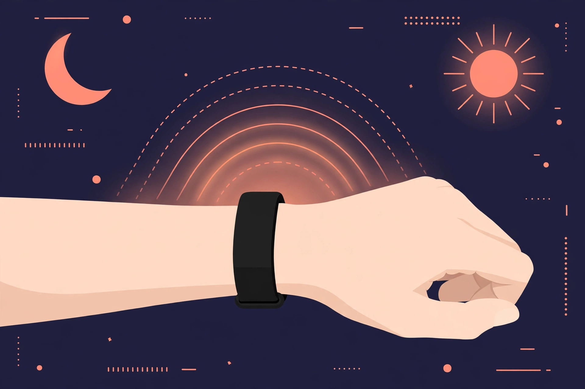
第一章 · 开场 0:00
无屏腕带 核心问题：数据能否跑在症状前？
对话 WHOOP CEO Will Ahmed
本章要点全文
本期的核心问题：连续采集的生理数据，能否在传统检测之前就发现健康问题？
WHOOP 做无屏腕带可穿戴设备，主打睡眠、恢复与运动负荷的连续监测。
本期是 Jason 与嘉宾 Ahmed 的对谈形式。
第二章 · 商业模式转型 0:59
$500 → 订阅 2018 转订阅 · 每月 $15–30
从卖硬件到订阅制
订阅制必须留住老用户、持续改进
老设备也能推送新功能
本章要点全文
WHOOP 最初一次性卖 500 美元硬件，买的人不够多；2018 年转向订阅制，每月约 15–30 美元，硬件不再单独收费。
关键差别：卖硬件的公司只想年年推新设备；订阅制公司必须留住老用户、持续改进用户手里已有的设备。
据报道，WHOOP 因此得以向已售硬件陆续推送心电图、心房颤动检测、血压洞察等功能。
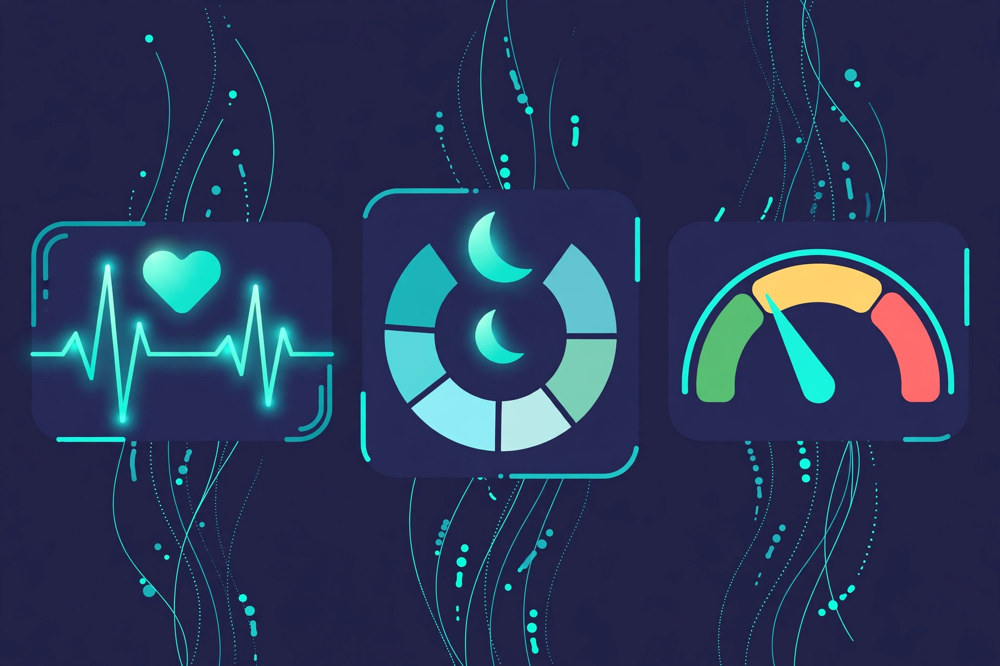
第三章 · 数据护城河 6:59
500 亿小时 约 400 万会员累计数据
全天候健康数据护城河
日均佩戴 23.6 小时
支柱：睡眠 · 恢复 · 负荷
本章要点全文
据 Ahmed 在节目中的说法：约 400 万名会员、日均佩戴约 23.6 小时，累计产生刚刚超过 500 亿小时的连续生理数据。
产品三大支柱：睡眠、恢复（0–100 分，红黄绿三档）与运动负荷，生理基础是心率变异性。
节目中给出的各年龄段心率变异性参考范围，不是医疗诊断标准。
第四章 · AI 教练 19:31
80% 会员用 AI 教练 · 50% 每天记日记
AI 教练与日记洞察
日记记 100+ 行为，酒精最常被提醒
杰森给 AI 教练打 7.5 分
本章要点全文
日记可记录 100 多种行为；某个行为各有约 5 次“做”与“没做”的记录后，系统会呈现它对恢复的实测影响——酒精是最常见的负面提醒。
约 50% 的会员每天记日记、约 80% 使用 AI 教练；杰森给 AI 教练打 7.5 分，并提醒 AI 的回答仍需结合原始记录判断。
GLP-1 追踪的理由（嘉宾说法）：减掉的体重中约一半是肌肉，需用记录推动力量训练与蛋白质摄入。节目中的追踪目标是产品内设定，不是普适医疗建议。
第五章 · FDA 之争 34:57
健康 ≠ 医疗 血压洞察踩中灰色地带
WHOOP 对阵 FDA
FDA 不同意“健康”定位，发警告信
双轨：诊断走许可，健康快上市
本章要点全文
WHOOP 以“健康”功能上线血压洞察，FDA 不同意这一定位并发出警告信。
据 Ahmed 一方说法，公司坚持立场后 FDA 更新了相关指南，功能得以继续提供——本页未独立核实 FDA 文件原文，不应当作监管结论的完整引用。
双轨策略：诊断类功能申请 FDA 510(k) 许可（心电图已有许可），健康功能则更快上市。
必须谨慎对待：嘉宾称生理信号“有可能”预测生物标志物是否超标，并举了癌症个案——这些是个案与信号、尚未临床验证，不是已证实的诊断能力。
第六章 · 快问快答 44:33
11 年 詹姆斯佩戴年头 · 现为全球大使
詹姆斯成全球大使
最早 100 名用户之一
大使还有 C 罗、马霍姆斯等
本章要点全文
节目宣布勒布朗·詹姆斯成为 WHOOP 全球大使；据 Ahmed 说，他已佩戴该产品 11 年、是最早 100 名用户之一，此前并无正式合作关系。
其余大使包括 C 罗、马霍姆斯、汉密尔顿、萨巴伦卡与高宝璟等（节目说法）。
Ahmed 的解释：全天候佩戴是买不来的，大规模投广告之前不宜付费让人佩戴，只有真正喜欢产品的人才会一直戴着。
本期说明与未核实部分
完整逐字稿未取得：摘要依据官方章节说明、allin.com 简介、节目整理页与一篇二手报道交叉核对。
Apple Podcasts 单集 id 未核实，故未写入。
Ahmed 关于 FDA 指南更新与血压功能合规性的内容，为嘉宾一方陈述，未独立核实 FDA 文件原文。
生物标志物预测、癌症预警个案均为嘉宾说法与个案信号，不是已证实的诊断能力；年龄段心率变异性数值与 GLP-1 追踪目标为节目内容，不是医疗建议。
2026 年 10 月 23 日
AI 网络恐慌、肯·格里芬的泡沫警告、法国的坠落？
AI Cyber Panic, Ken Griffin's Bubble Warning, The Fall of France?
一句话总结 主线：AI 开支能否变成真实生产力，以及攻击为何比防守更快。
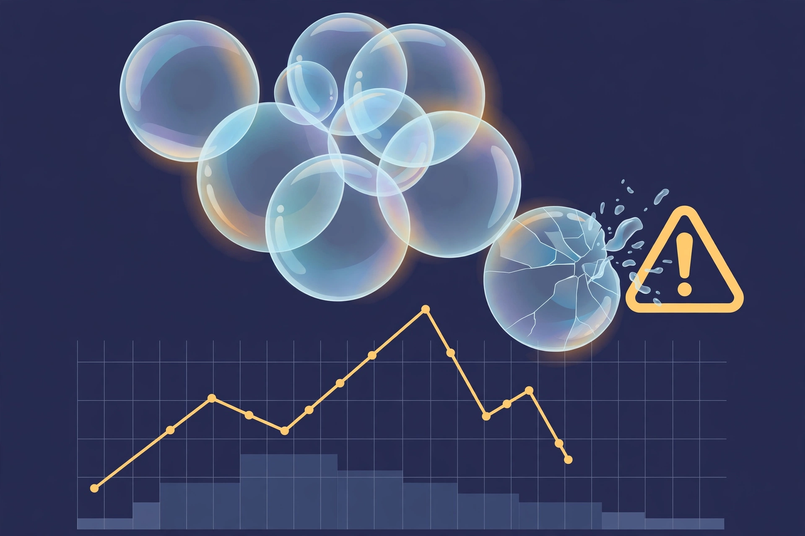
第一章 · 泡沫警告 0:11
几乎肯定在泡沫中 格里芬判断 · 长期仍乐观
肯·格里芬的 AI 泡沫警告
担忧：AI 开支还没变成生产力
数据中心股跌约 10%，Meta 跌 6% *
本章要点全文
Citadel 创始人肯·格里芬表示 AI“几乎肯定处在泡沫中”，同时对 AI 长期前景仍持乐观。
他认为泡沫常伴随重大经济变革出现，真正的担忧是企业还没有把 AI 开支转化为生产力。
节目提到的市场反应：数据中心相关股票跌约 10%、Meta 财报后跌 6% 等——为节目引述的说法，未单独核实为实时行情。
第二章 · 开支循环 0:11 起
1% 的公司 查马斯估：占 AI 开支 90% *
AI 开支是不是在“自己转圈”
其中约 80% 是未盈利初创
风投 → 初创 → 买 AI → 再融资
本章要点全文
查马斯的个人粗算（不是已核实的行业数据）：约 1% 的公司占 AI 开支的 90%，其中约 80% 来自尚未盈利的风投支持型初创公司。
他描述的循环：风投募资投给初创，初创把钱花在增长与别家的 AI 上，再凭收入增长去融资。
他的结论：AI 必须走出初创生态、扩散到更广的企业，才能成为可预测的长期盈利驱动力。
杰森持不同看法：初创公司是最灵活的买家，它们的涌入恰恰说明技术方向是对的。
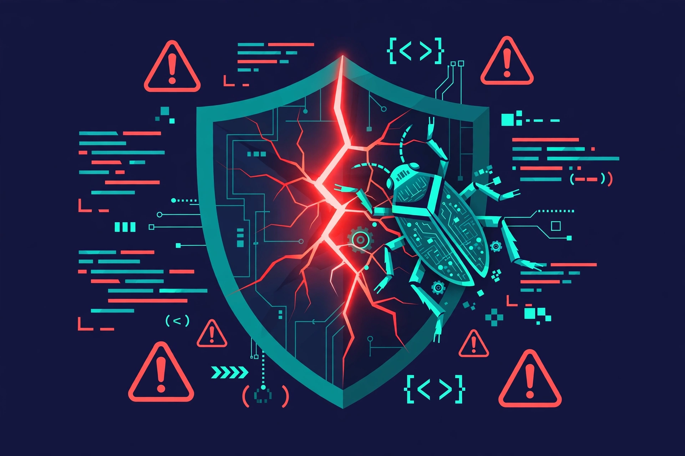
第三章 · 网络恐慌 8:19
9.2 / 10 PHP 漏洞严重评级
PHP 漏洞与 Arora
补丁发布后攻击激增
“10 天太长了”——根源是技术债
本章要点全文
据节目及相关报道：PHP 漏洞由 AI 辅助的研究人员发现，安全团队评级 9.2 分（满分 10 分），补丁于 10 月 21 日发布，攻击活动随之激增。
阿罗拉的判断：“10 天太长了”，下一波攻击会来得更快；暴露的原因是长期拖延升级留下的技术债。
他更看好可审计的开源权重模型，并认为算力供给才是企业真正的瓶颈。
同一段讨论还辩论了智能体责任归属：责任在提供智能体的公司，还是在授予代理权的一方——节目未有定论。
第四章 · 法国 44:17
5% 法国 10 年国债收益率 · 2002 年来首次破线
法国：骚乱与债务危机
抗议超 50 万人，3000+ 企业受损 *
紧急状态与评级均为讨论 *
本章要点全文
节目引述的报道包括：抗议者超过 50 万人、超过 3000 家企业受损、法国 10 年期国债收益率升破 5%，为 2002 年以来首次。
节目还讨论了是否宣布紧急状态，以及穆迪、标普是否下调法国评级的预测市场赔率。
这部分明确是主持人的观点讨论，不是已发生的评级或政策决定，不应当作既定事实。
第五章 · 结尾章节 1:31:49
只记标题 具体论点未核实，不展开 *
特朗普的下半场策略
本章要点全文
官方章节标题为“特朗普的下半场策略，新闻秘书会是杰森吗？（Press Secretary J-Cal?）”。
本期核查未能从可靠逐字稿中核实这一结尾段落的具体论点，因此这里只记录章节标题与时间点，不展开、不编造内容。
本期说明与未核实部分
完整逐字稿未取得：摘要依据官方章节说明、Apple Podcasts 页面、allin.com 简介与二手整理交叉核对（本期 Apple 单集 id 1000797862912 已核实）。
查马斯的 1%、90%、80% 为嘉宾个人粗算估计；美国大银行自建数据中心的案例为节目转述，未独立核实。
法国部分的抗议人数、企业受损与收益率数字为节目引述；评级与紧急状态相关内容为观点讨论，非既定事实。
特朗普结尾章节的具体论点未核实，已按卡片中的方式处理。
2026 年 10 月 21 日
Arvind Krishna 与 Nikesh Arora：量子威胁、开源与前沿之争、AI 网络战与 SaaS 崩溃
Arvind Krishna & Nikesh Arora: Quantum Threat, Open vs Frontier AI, AI Cyber Warfare & SaaS Collapse
一句话总结 共识：量子倒计时、开源靠成本赢常规任务、前沿只用于高价值时刻、软件向少数平台整合。
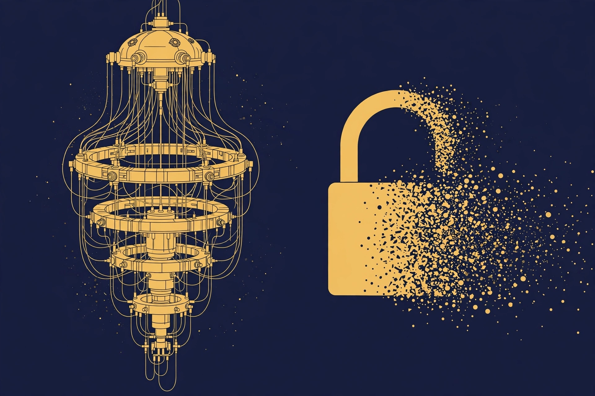
第一章 · 量子威胁 0:00
2030 量子破解今日密码的年份
量子威胁：问题是哪一年
争论 2028 / 2029 / 2033，取中 2030
“先收割、后解密”：威胁今天已开始
本章要点全文
Krishna：业界争论集中在 2028、2029、2033 年，取中间值就是 2030 年——到那时量子计算机将破解今天的密码（其工程判断）。
“先收割、后解密”：今天被偷走的加密数据可以先存着、五年后再破解，所以威胁今天就已开始，不是 2030 年才开始。
后量子密码不是科学问题，而是执行问题：方案与代码都已经有，人们只是“一直懒得去做”。
行动主张：现在就开始替换为量子安全基础设施，不能等到临近时用一年重建整个 IT 技术栈。
第二章 · 开源 vs 前沿 9:07
$20–50 → $1–2 每百万 token：前沿 vs 自托管开源
不为每个任务买“法拉利”
按任务配智能，高价值才用前沿
预测 75%–90% 常规用量走开源 *
本章要点全文
Arora：按任务匹配智能——小而专的模型可做到约 99.9% 的准确率（嘉宾说法）；只有遭受攻击止血、药物发现等高价值时刻才值得用最贵的前沿模型。
Krishna 的价格参照：前沿模型约 20–50 美元/百万 token，开源权重模型在自有 GPU 上经约一周优化，可降到约 1–2 美元/百万 token。
他的预测：75%–90% 的常规 token 用量将流向开源权重模型——应理解为方向性判断，而非精确市场份额。
共识之外还有 IP 逻辑：把思维链交给别人等于交出 IP，这也推动企业自托管开源模型。
第三章 · AI 网络战 18:07
1 个就够 攻击者只需 1 个漏洞
模型是“发现器”，不是“自动修复器”
攻防天然不对称
发现约 60%–80% 真实，约 20% 幻觉
本章要点全文
攻防不对称：模型能发现漏洞，但攻击者只需要一个漏洞，防御者必须找到并修复每一个。
嘉宾提到的经验比例（需谨慎引用）：测试中约 60%–80% 的发现是真实的、约 20% 是幻觉，没人会不经复测就直接用模型打补丁。
从战争史提炼的三种防御：联盟共享漏洞情报、让防御成本与攻击对称、抢占技术优势。
嘉宾认为 AI 生成的代码最终会优于手写代码，但保留了一句：“我们只会发现我们知道如何发现的缺陷。”
第四章 · 监管与军备竞赛 21:14
减速不可能 嘉宾共识：没国家会主动停下
全球“集体减速”不可能
本章要点全文
嘉宾共识：没有国家会主动停下，一方减速只会被另一方看作追赶、反超的机会；欧洲“先恐惧、先监管”是他们眼中的反面教材（嘉宾的价值判断）。
责任原则：造出来并释放出来，就要为它负责，不能用“代码是模型写的”推卸责任。
数据中心禁令预测：50 个州全禁“没有可能”，30 个州禁是可能的，没禁的州会接走投资与就业（嘉宾预测）。
真正的瓶颈是算力供给而非价格：离算力中心越远，获得同等规模算力的可能性越低。
第五章 · SaaS 崩溃 30:32
500–5000 → 5–10 企业软件供应商 → 主要平台数
软件只剩 5–10 个平台？
拼 40 种工具是“愚蠢的”
样本 Nvidia：控全栈，定利润
本章要点全文
纵向整合的现代样本是 Nvidia：控制整个技术栈，就能决定把哪一层商品化、把利润在哪一层之间转移。
Arora：让客户自己拼接 40 种安全工具是“愚蠢的”，软件会像 CRM 一样整合为少数平台。
Krishna：一般企业用 500–5000 个软件供应商，能否只留 5–10 个主要平台？他认为方向确定，时间在“六个月到六年之间”。
例外：银行核心数据库这类要求极高可靠性的系统很难被 AI 软件替代——“SaaS 崩溃”不是所有软件归零。
本期说明与未核实部分
本期摘要依据研究时完整收听本期音频的自动听录与官方节目描述；自动转写对部分专有名词、数字有不清之处，相关处只取大意、不作精确引用。
“75%–90% token 流向开源权重”“5–10 个平台”“六个月到六年”“30 个州禁数据中心”、token 价格对比等，均为嘉宾口头预测或估算，非可验证事实。
Apple Podcasts 单集 id（1000797524230）由任务方提供，本次未直接打开 Apple 页面核对；节目存在性、标题与日期已由 All-In 官网与 Podscan 确认。
本期对应的 YouTube 视频链接未找到并核实，故未写入。
All-In 播客中文总结 · 内容为对节目的中文摘要整理，观点与数字归属节目嘉宾与主持人；音频为摘要朗读，不是原始录音。